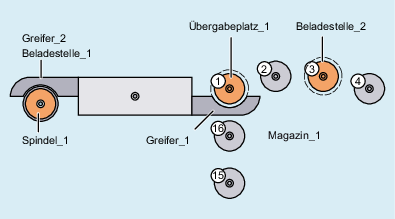

Über das Fenster "Zuordnung" können Sie den mechanischen Zusammenhang zwischen den einzelnen Komponenten der TO-Einheit herstellen.
Sie befinden sich im Bedienbereich "Inbetriebnahme" → "NC" →"Werkzeugverwaltung" unter dem Verzeichnis "Aktive Daten" → <TO-Einheit>.
Über das Element Zuordnungen können Sie folgende Parameter durch Auswahllisten miteinander verknüpfen:
Spindel/Greifer/Lader zu Magazin
Greifer/Lader zu Spindel
Beladestelle zu Magazin
| Hinweis |
|
Für jede Magazinzuordnung muss der Abstand in Plätzen vom Magazinnullpunkt des betroffenen Magazins zum internen Magazinplatz festgelegt werden. |
Wenn z. B. von einem Magazin Werkzeuge auf eine Spindel eingewechselt werden sollen, kann folgende Zuordnung bestehen:
|  | |
Platz | Art/Index |
1 Werkzeugspindel | Spindel_1 |
2 Greifer | Greifer_1 |
3 Greifer | Greifer_2 |
4 Übergabeplatz | Übergabeplatz_1, liegt im Magazin |
1 Beladestelle | Beladestelle_1 |
2 Beladestelle | Beladestelle_2 |
Parameter | Zuordnung |
|---|---|
Spindel/Greifer/Lader zu Magazin |
|
Greifer/Lader zu Spindel |
|
Beladestelle zu Magazin |
|
Siehe auch:
Funktionsübersicht des Werkzeugverwaltungs-Editors
Werkzeugverwaltung bearbeiten